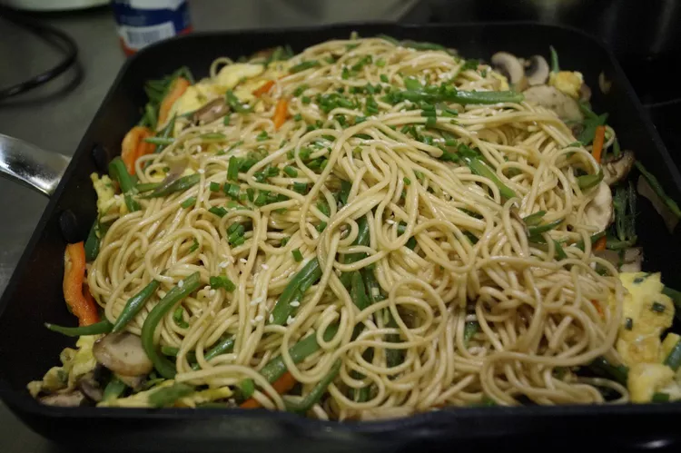

Noodles

Description
Noodles is the Asian culinary dish
This is the stir fried noodles with vegetables
Ingredients
- ¼ cup oil, divided, or as needed
- 3 large eggs
- 3 ½ cups trimmed and chopped fresh green beans
- 5 mushrooms, sliced
- 1 green bell pepper, cut into matchsticks
1 carrot, cut into matchsticks
1 (10 ounce) package egg noodles
Steps
- Heat 2 teaspoons oil in a large skillet over high heat.
Whisk eggs together in a bowl. Pour into the skillet and stir-fry quickly until lightly set, about 2 minutes.
Remove from heat and transfer to a large plate. Set aside.
- Heat 3 tablespoons oil in a wok over high heat. Add green beans, mushrooms, bell pepper, and carrot; stir-fry for 2 to 3 minutes.
Remove from heat and transfer to a large plate; set aside.
- Meanwhile, fill a large pot with lightly salted water and bring to a rapid boil.
Cook egg noodles at a boil until they are just starting to soften, but are still pretty firm, about 4 minutes.
Drain and rinse cooked noodles under cold running water. Drain and separate.
Transfer to a bowl and add just enough oil to coat the noodles so they won't clump together.
- Whisk water, light soy sauce, soybean paste, oyster sauce, dark soy sauce, and sesame oil together in a bowl until sauce is well combined.
- Combine cooked noodles, vegetables, eggs, and sauce in the same wok and stir fry over medium-high heat until everything is warmed through and noodles and vegetables are cooked to your liking, 1 to 2 minutes.
Serve immediately sprinkled with spring onions.